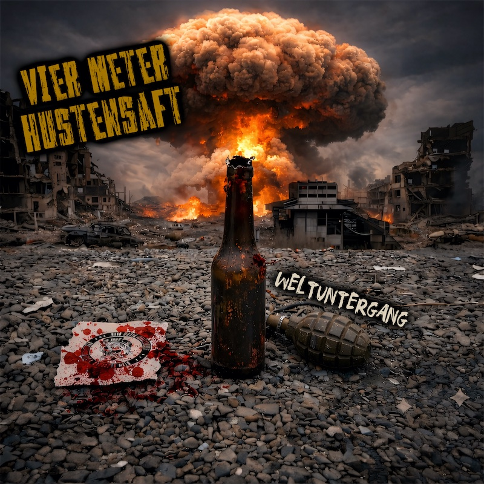

Review
Vier Meter Hustensaft – Weltuntergang

Eine komplette EP in einem einzigen visualisierten YouTube-Video. Alle vier Stücke hintereinander. Habe ich so auch noch nicht erlebt. Gefällt mir aber, zumal ich nicht nach jedem Song wieder irgendwo draufdrücken muss.
Also, reingezogen!
Bei Vier Meter Hustensaft hat sich in den vergangenen Jahren personell einiges getan. Mit „Weltuntergang“, erschienen am 30. Oktober über NRT-Records, hören wir uns an, was die aktuelle Besetzung jetzt macht.
Punkrock. Punkt.
Wobei ich es mir damit wohl etwas zu einfach mache. Rotzig finde ich das nicht, glattgebügelt allerdings auch nicht. Zugänglich? Oh ja! Und das meine ich ausdrücklich als Lob. Ich verstehe den Gesang, die Mucke ist schnell und zum Mitgrölen gibt es reichlich Gelegenheit.
Nur inhaltlich ist die Stimmung deutlich beschissener, als man beim fröhlichen Mitwippen vielleicht vermuten würde.
Im Titelstück brodelt die braune Scheiße, die Menschen machen sich ihre Probleme weitgehend selbst und irgendwann reicht es dem Erzähler. „Weltuntergang, wo bleibst du denn bloß?“ Der hat offenbar auch keine Lust mehr, auf Besserung zu warten.
„Keiner Wird Euch Vermissen“ geht von 1933 über 2025 bis ins Jahr 2035. Erst die Frage, ob aus der Geschichte überhaupt irgendetwas gelernt wurde. Dann der Blick auf eine Zukunft ohne Nazis, in der jeder lieben kann, wen er will, und kein Mensch illegal ist. Dazwischen ein ausgesprochen höflicher Refrain: „Ihr sollt euch verpissen.“
Da singe ich doch gerne mit.
Bei „Das Ganze Schwarz“ wird dann deutlich, welche Mauer hier gerade fällt. Keine aus Beton. Schwarz schimmert blau, die braune Faschoschar jubelt, und politische Versprechen sind nach der Wahl offenbar nur noch lästige Erinnerungen. Vier Meter Hustensaft halten sich da nicht lange mit freundlichen Umschreibungen auf.
Mit „Wir Stehen Zusammen“ geht es zum Schluss um die Gleichgültigkeit gegenüber Obdachlosen und Menschen in Not. Der Text fragt ziemlich direkt, wie egal einem das Leid anderer eigentlich sein kann, während man selbst genug Kohle hat. Der Refrain fordert dagegen, sich für Leute starkzumachen, die das gerade selbst nicht können.
Am Anfang wird der Untergang noch herbeigewünscht, am Ende lässt man die anderen trotzdem nicht allein. Diesen Verlauf mag ich. Man kann die ganze Scheiße satt haben und sich trotzdem noch umeinander kümmern.
Vier flotte Songs in zehn Minuten und zweiunddreißig Sekunden. Verständliche Texte, schöne Mitgröhlstellen und genug Gründe, sich zwischendurch aufzuregen. Ich hatte jedenfalls deutlich mehr Spaß, als der Titel vermuten lässt.
Und jetzt nur noch vier Meter – äh, Worte – bis zum Weltuntergang.